Applications are closed.
Download the First Info as a PDF here.
Download the application poster here.
Dates:
2nd – 22nd August
Location:
Mazarete, Spain
Age range:
16–24
Camp fee:
1190 €
Deadline:
22nd March 2026, 23:59 (CET)
The International Astronomical Youth Camp (IAYC) is a three-week long summer camp aiming to promote knowledge of astronomy and related sciences in a unique international atmosphere. It is run by an international team of students and young scientists and organised by the International Workshop for Astronomy e.V..
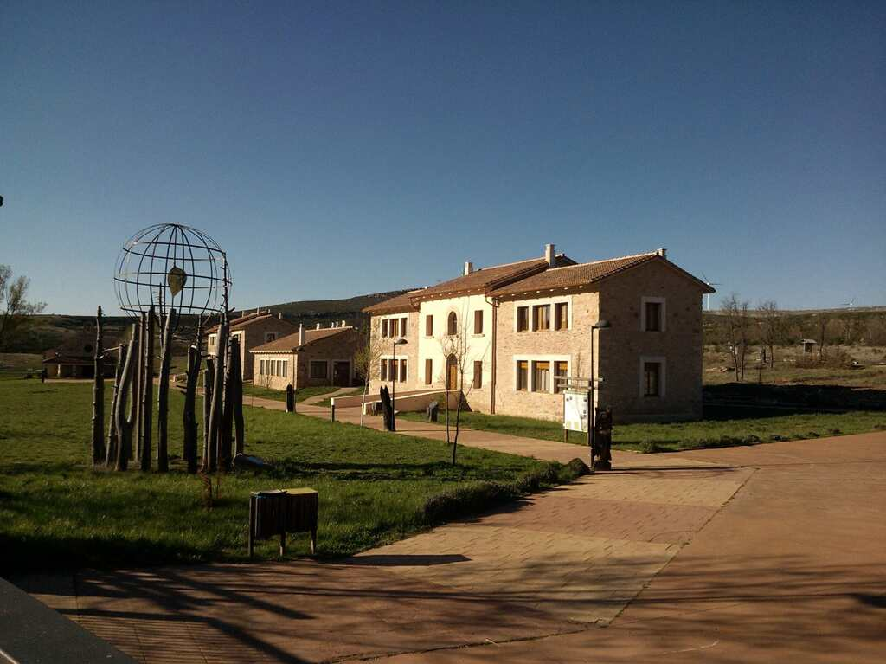
Picture: Alberge Rural Solanillos (https://albergueruralsolanillos.com).
More detailed information about the IAYC in general, participants, the daily schedule and observing during the IAYC can be found in the About the IAYC section. We strongly recommend all prospective participants read this section as well as this First Info carefully!
About the 60th IAYC
IAYC 2026 will be held at the Albergue Rural Solanillos, in Mazarete, Guadalajara, Spain (do not confuse with the much larger Guadalajara, Mexico). This year’s camp will be doubly special: we will be celebrating the 60th IAYC, and we will have the privilege of observing a total solar eclipse on the 12th of August, something the IAYC was last able to do in 1999.
The camphouse consists of two large buildings spanning rooms of 4-12 people, as well as some large additional indoor spaces, which will be used for camp activities. There are several common areas for working and socialising, sports fields, and even a swimming pool! Most importantly for us, the site falls under some of the darkest skies in Europe, with a Bortle class of 2!
Dates: 2nd - 22nd August, 2026
Camphouse: Albergue Rural Solanillos
Address: CM-2120, 19286 Mazarete, Guadalajara, Spain
Latitude: 40° 57’ 34.7” N
Longitude: 2° 11’ 5.6” W
Altitude: 1200 m (3937 ft)
Bortle scale: 2
Applying to the IAYC
To participate in the IAYC you must be between the ages of 16 and 24 (both included) at the beginning of camp. Please do not contact the organisation asking for exceptions. Applications will be reviewed shortly after the deadline, and the results will be released sometime in April.
If your application is successful, you will be expected to pay a participation fee of 1190 EUR, the vast majority of which will be used to cover accommodation and food for the three weeks of the IAYC. Once you receive your acceptance letter, you will have the option to pay the fee in two installments: at least 350 EUR must be sent within seven days of receiving your invitation; you will then have fourteen more days to send the remaining 840 EUR.
You can withdraw your application at any time before we receive the participation fee. If you wish to withdraw shortly after that, we will refund you–but we reserve the right to charge a 50 EUR administration fee. If you withdraw after the 1st of July, we will only refund you if we are able to find another applicant to take your spot, and we reserve the right to charge up to 100 EUR in fees.
Click here to go to the application portal. Please note that your application will not be complete until you hit submit, after which you will receive a confirmation email. In order to complete your application, you (or, if you are under age, your legal guardian) must upload a signed consent form in the corresponding field, which you will find in the application portal. When you apply to the IAYC, via the form, you are allowing us to process your data as per our data protection agreement.
All participants are required to have valid health insurance for the duration of the camp. In case your application is successful, you must send a copy of your insurance certificate (valid in Spain) to us. Citizens of the European Union may send a scan of their European Health Insurance card.
If you need a visa to enter Spain, please contact the Spanish embassy or foreign office in your country as soon as possible to find out what documents you will need. We strongly recommend making an appointment for your visa ahead of time, even if your application has not yet been accepted. Once you have received a participation offer, the IAYC can provide a letter of invitation upon request. Otherwise, obtaining a visa is your responsibility.
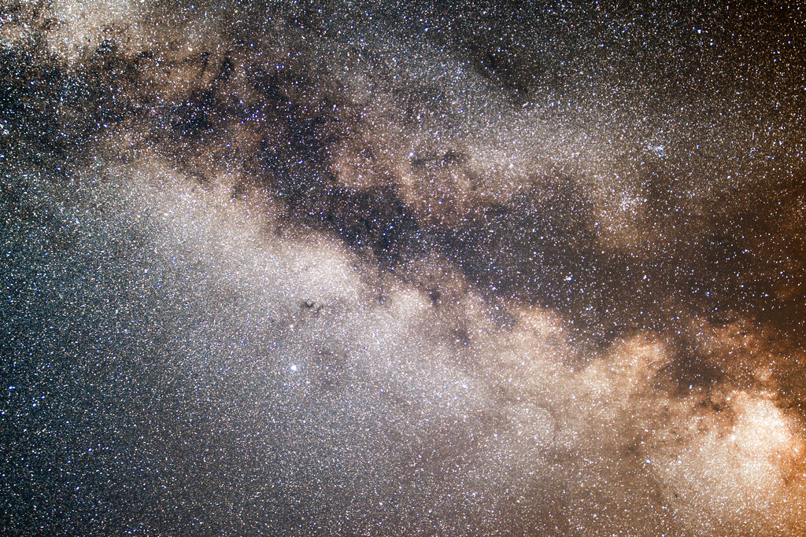
Picture: The Milky Way. Taken by participants at IAYC 2017 in Spain
The IAYC grant program
The International Workshop for Astronomy (IWA) is a non-profit organisation run by volunteers that aims to promote international collaboration and agreement, and spread astronomical knowledge and teach young people to work scientifically on their own. As part of our goals at IWA, we offer financial support to participants who may otherwise not be able to afford to come to camp. Our grant program is supported by donations from institutions and individuals from all around the world, including many previous participants. For the 60th IAYC, we are able to offer three types of grants:
-
IWA grants are open to anyone who is eligible to apply to the IAYC. These grants are funded by IWA and contributions from private donors. The IWA grants prioritise first-time participants.
- The Wilhelm and Else Heraeus (WE-H) Foundation grants are open to German residents or citizens. These grants are funded by gracious donations from the Wilhelm und Else Heraeus-Stiftung. If you apply to this program, we may ask for proof of eligibility.

- The Zaklada MIOC Alumni grant. Open to students at the XVth Gymnasium in Zagreb, Croatia. This is a fully funded grant by the Croatian IAYC alumni community.
Please be aware that none of the grants are able to cover travel costs. The IWA grants are awarded according to necessity and may cover up to the full participation fee. Grants do not cover the costs of travelling to camp. We expect grantees to arrange their travel and tell us how they plan to cover that expense.
To apply for a grant, you must complete the additional grant application section of your online application. This will include sending a 2-3-minute-long video introducing yourself, explaining your motivation for wanting to join the IAYC, why you require a grant, and how you are planning to cover your travel expenses. Please send your video to info@iayc.org via the cloud service wetransfer.com with the title “Grant video [your Name] IAYC 2026”. The deadline for the video is the same as for general applications. Note that grant applications missing the video will not be considered.
Due to our limited liquidity, we expect grant applicants to attempt to find alternative ways of support parallel to our grant program. If you have any questions regarding the grant programs, or you would like some guidance regarding institutions in your country that may be able to help you with fundraising, please contact info@iayc.org.
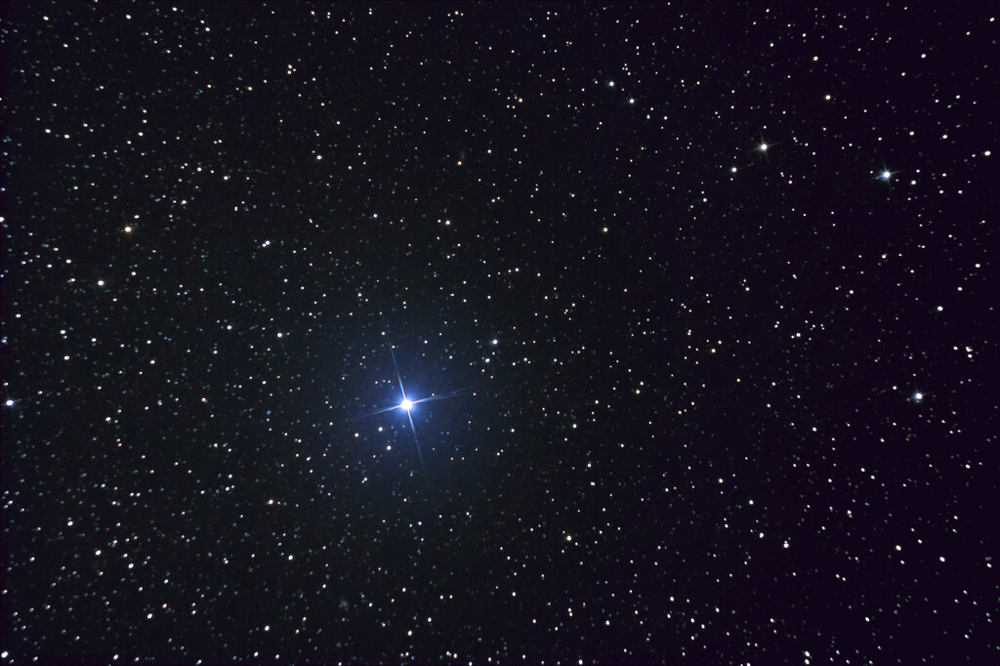

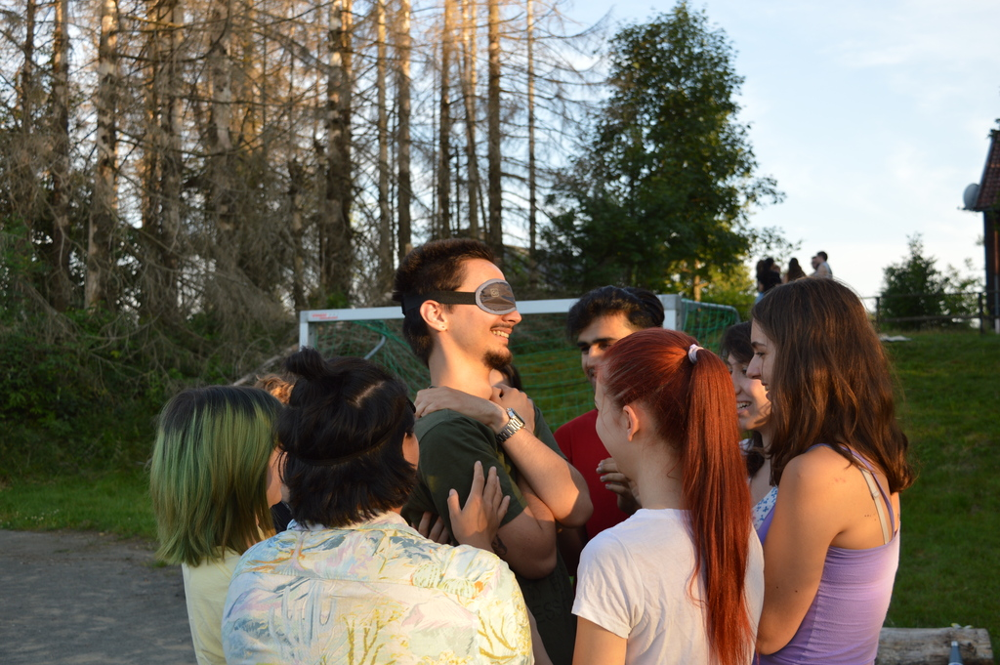
Observing
The camphouse is surrounded by large lawns that will be used as our observation field. Observing takes place during working both group sessions as part of your project (with our solar telescope during the day) or during free time after midnight, when telescopes are available for everyone. Of special interest this year is the total solar eclipse on the 12th of August. We will provide special eclipse glasses and watch the event together!
At the IAYC, we encourage everyone to observe, regardless of how much observing experience you have. You will be surrounded by highly experienced leaders and returning participants who will be more than eager to show you the ropes and offer support.
You are welcome to bring your cameras and observing equipment to camp. The more the merrier! Browse our equipment list to learn about the telescopes, accessories, and cameras we have available.
Camp will also have a Dark Room, where you can learn how to develop your own film photography.
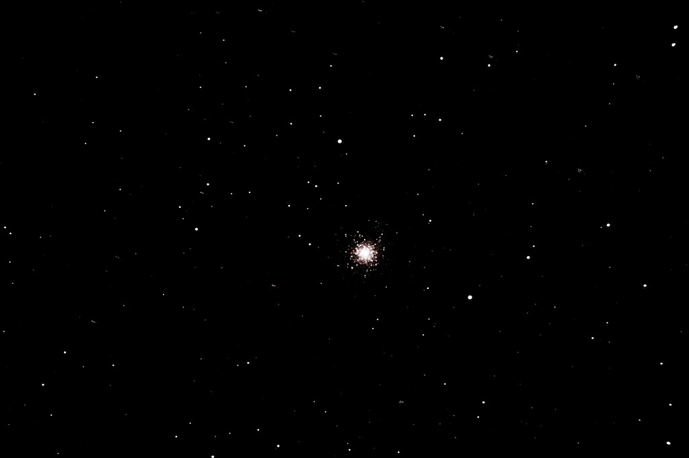
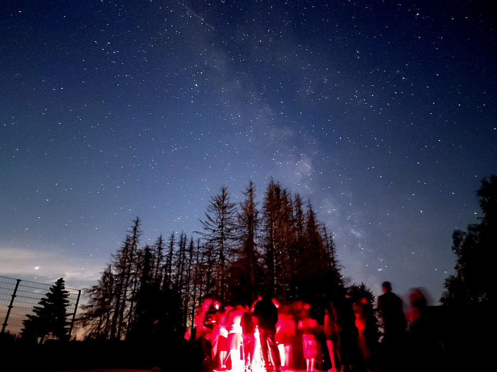
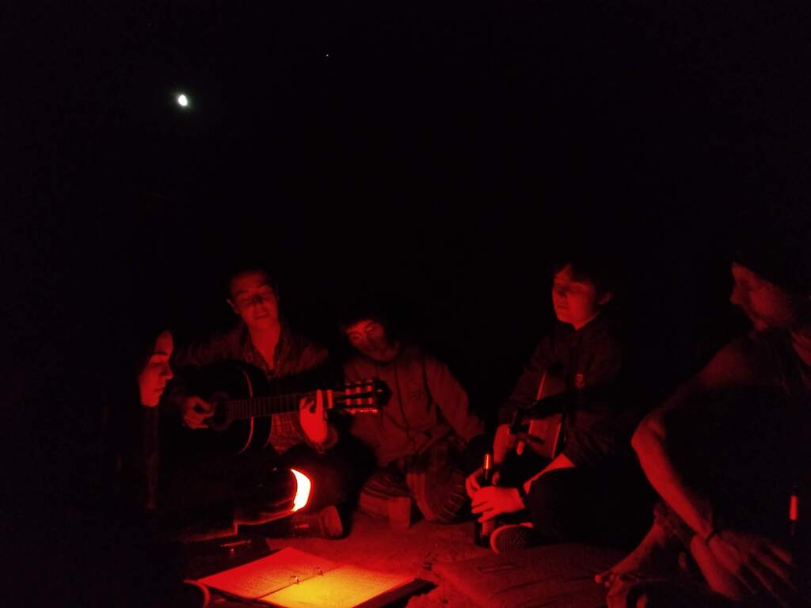

Pictures: M13 globular cluster (top-left), night sky observation(top-right), and the sun (bottom-right), taken by participants as part of their working group projects in previous IAYCs. — Not all observing is done through telescopes! We love to gather outside after dinner and sing songs while looking at the dark skies (bottom-left).
Diversity
IAYC is committed to making the camp as accessible as possible, and we especially welcome applications from those belonging to minority groups. If you require any special arrangements (prayer time, dietary restrictions, sensory overload…), please do not hesitate to contact us via info@iayc.org. You can read more on our policy on diversity here.
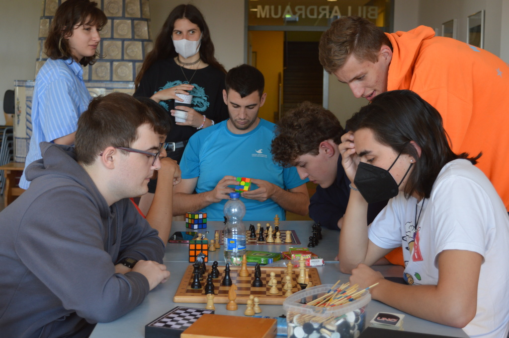
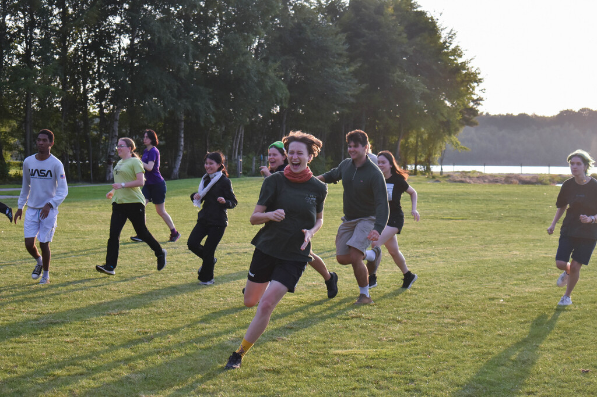
Pictures: A chess tournament at IAYC 2024 (left), NAP games at IAYC 2025 (right)
About Spain
Spain is a medium-sized country (50 million people, 500.000 square kilometres) located in Western Europe. It is a member of the European Union, and its most widely spoken language is Castilian (known internationally as Spanish). Additionally, it has four co-official languages: Catalan, Valencian, Galician and Basque. IAYC is taking place in a Castilian-speaking region. Most of the younger population speaks some degree of English, but this becomes uncommon in rural areas.
Spanish weather is dry and, in the summer, very hot. This means we are likely to have many clear skies, but make sure you bring sunscreen and hydrate throughout the day. Temperatures near the camphouse may reach 30-35 °C (85-95 °F) in the afternoon.
Spain is a very safe country, with one of the lowest crime rates in the world. Spanish food is varied and Mediterranean, often involving olive oil, garlic, tomatoes, rice, pork, and spices like paprika and saffron.
Due to its peculiar history, a meeting point for the northern and southern Mediterranean peoples, Spain has a unique musical heritage. This is a Spotify playlist containing some Spanish music through the ages. If you want to learn about more contemporary Spanish music, feel free to ask your Spanish colleagues at camp!
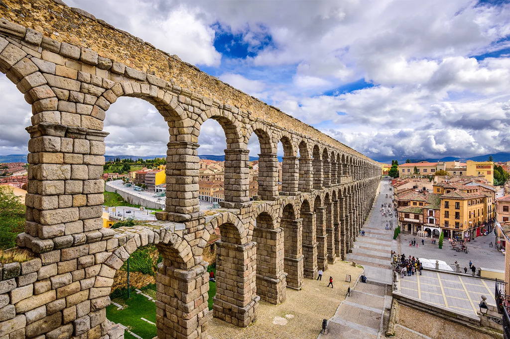
Pictures: The University of Salamanca, among the oldest in the world (top-left). Carvings on the walls of the Alhambra palace in Granada (top-right). The largest preserved Roman aqueduct in the world at Segovia (bottom-left). The Cathedral of Saint James, in Santiago, one of the most important pilgrimage sites in Medieval Europe (bottom-right).
Capital Madrid (~3.5 Million inhabitants)
Major Cities Barcelona, Valencia, Sevilla
Currency Euro (EUR) €
International dialing code +34/0034
Choosing your Working Group
Working Groups (WGs) are an integral part of the IAYC experience. Not only do they represent the bulk of your scientific work at camp, but they are also the place where you might meet your closest friends! When submitting your application, you will have the chance to rank those WGs you are most interested in, so please read through the following section carefully!
AGONY - AmazinG prOjects on future techNologY
Tags: engineering, physics, theoretical, sci-fi, sociology
Humans have been advancing their technology since there was any notion of humankind to speak of. And with our technological progress has come the improvement of living standards for all, as well as societal progress towards a more egalitarian and equal society.
In AGONY, we will look beyond our current state of development and imagine the future and how futuristic technologies (that are still grounded in the laws of physics of course) will shape our prospects and our society as a whole.
There will be a variety of projects for you to choose from, ranging from technical projects like examining the material requirements for building large habitats with artificial gravity in space, to examining the societies that might evolve in such isolated colonies. Maybe you want to explore the future energy sources that could fuel our growth and how we can harness the power of the sun with enormous satellite constellations or how we could extract resources from our star or even move the entire solar system around! While we will have to make many assumptions to discuss these futuristic ideas, all of the projects will be fundamentally possible within the laws of physics and many of them might even become achievable within our own lifetime.
Whether it’s simulating universes, exploring the galaxy or extracting resources and energy in space, there is an endless collection of topics you can explore in AGONY, and no matter your level of expertise or ambition, there will be something for you!
Joris

Returning for his fifth IAYC and second camp as a leader, this German physicist is your go-to guide to everything nerdy, mind-boggling, and awesome! From electronics and engineering to piloting and planes to sci-fi and heavy metal, you’ll never run out of conversation topics with Joris. Ask him about his experience doing his bachelors in Heidelberg, how to communicate with a satellite with a box of scraps, or which of your favourite movies are the most scientifically accurate - whatever the topic of conversation, in Joris, you’ll find a kind smile, a keen curiosity, and a fantastic leader!
ASTERIX - Advanced Systems for Terrain Exploration by Rovers In eXtreme conditions
Tags: robotics, hardware, electronics, microcrontroller, programming
“My battery is low. And it’s getting dark.”
Those were the last few words of the Mars rover Opportunity before its life ended. Alone, in the red desert of Mars. Ok, maybe it wasn’t that dramatic. And maybe the last data set we received from Opportunity was very open to lyrical interpretation. But what is not up for interpretation is the fact that Opportunity, Spirit, Perseverance and all the other planetary rovers have made a huge impact on our understanding of planetary science. They have visited places no human has ever set foot on. And they have returned data that forced us to redraw maps, rewrite assumptions and rethink our understanding of life. These rovers have shown us landscapes, sunrises, water flows and views of our earth that no one has ever seen before.
In ASTERIX we will build our own rover! We will design and build the frame, add wheels, a microcontroller and a few sensors and enable it to autonomously explore the surrounding terrain to collect data. Sounds amazing, right? It doesn’t matter if you have been part of the crew that landed Opportunity on Mars or if you have just stumbled across this working group and thought it sounded interesting. So, get ready for a lot of handcrafting, coding and chasing your rover across the floor when it decides to ignore all instructions and run for the horizon. I will meet you halfway with snacks, music and lots of sticky tape.
See you in Spain!
Franzi

Here comes Franzi! An IAYC veteran with three camps and many table game victories under her belt, this wonderful Austrian brings serious expertise in mechanics to the Leader Team. A student of physics at the University of Heidelberg, Franzi is a lovely human being with a special passion for anything to do with mountains. You can talk to her about all sorts of things, from climbing to robotics. If you are particularly confident, you can challenge her in one of our essential late-night IAYC sports games, but the odds will be heavily stacked against you!!
BEANS - Binaries, Eclipses ANd Stellar science
Tags: stars, astrophysics, data analysis, programming
What’s better than one star? Two stars!
Binary star systems are extremely useful tools for studying the formation and evolution of stars. How? Well, measuring the mass of a star is difficult… unless it’s in a binary and you can apply Kepler’s laws to the orbit! Measuring the radius of a star is also difficult… unless it’s in a binary and you can work it out by looking at the eclipses! In addition to giving us direct mass and radius measurements, you can find all kinds of interesting environments in binaries! On one hand, you can get extreme and exotic phenomena such as cataclysmic variables, heartbeat stars and type Ia supernovae. On the other hand, detached (non-interacting) binaries are excellent places to test the finer details of stellar astrophysics. You might also be surprised to learn that most stars exist in binary or multiple systems — our Sun is quite unusual.
In BEANS, we’ll work together by studying the same binary star(s), but with different techniques. You’ll use real data from space telescopes and professional observatories to measure everything you can — mass, age, distance, chemical composition, radius, temperature — and place the stars in the Galactic context. We’ll also take advantage of the clear night skies with a small observing side-project (maybe you can guess what it is, but you’ll have to wait until camp for me to spill the beans…).
There will be no shortage of things to learn, solve, code, break and fix in BEANS. So if you bring your curiosity and enthusiasm, I’ll bring resources, troubleshooting expertise, and a whole load of cookies.
See you in Spain!
Nikki

Say “hej” to Dr. Nikki! This Scottish astrophysicist is currently a postdoc at Uppsala University in Sweden, studying M dwarfs and eclipsing binary stars. Nikki is back and better than ever for her 10th IAYC and 6th camp as a leader. As one of the wisest and coolest guys around, Nikki is a wiz when it comes to all things related to graphs, board games, and music. They’ll be delighted to chat with you about their research, Star Wars, and all the instruments they play. Nikki will bring their good looks and charming personality, so don’t miss out on getting to know her!
CLANKER - Computer LeArNing algorithms acquiring Knowledge to catEgoRize space
Tags: programming, machine learning, computer vision, image processing
Beep boop oil… is… low…
We currently live in an age where data for everything is abundant whether it be stars, galaxies, craters or anything you can imagine. But how does one parse through this data, understand the data, extract information from it. You could look at it yourself, but when there are thousands of images or thousands of entries in a CSV file each one with many data points, you start to wonder if there is a way of automating this process of extracting the information. This is where some cheeky data analysis and machine learning come into play!
Here in CLANKER we’ll use computational tools to bring some order to neverending data. Whether it’s classifying galaxies, identifying craters, or sifting through massive datasets, you’ll use algorithms to automatically—and more importantly—correctly infer useful information or patterns in the data. From building and training your own Convolutional Neural Network (CNN) to applying statistical models outlining outliers, we’ll be using machine learning to help us in this endeavour.
Whether you’re brand new to coding or a seasoned veteran, bring your rubber ducks to vent at when the code isn’t quite working. I’ll bring some snacks and coffee to help with that.
See you in Spain!
Dylan

Beep boop…this cool and wonderful person is Dylan—you can find him making whole rooms laugh or having deep conversations in cozy room corners :-) Dylan is from Girona, Spain and is returning to the IAYC for the seventh time after his first camp in 2017 (he’s a true IAYC connoisseur). This will be his first camp as a leader, so be sure to give him a warm welcome! He is currently working in Machine Learning/Computer Vision after completing a Computer Engineering degree, and has lots of knowledge to impart. Please ask him about tennis, sudoku, or his highest score in minesweeper—with Dylan, you’re guaranteed to have great chats and good laughs ;)
IRN-BRU - Images are Really Nice and oBserving is Really fUn
Tags: observing, images, photography, telescopes, data processing
The human race has been looking up since the beginning of time to gaze in wonder at the night sky and wondering how we can possibly capture its beauty. Through time we have done this through drawings, paintings, and more recently through digital images.
In IRN-BRU we’re going to get hands on with astronomical images and learn more about observing, capturing images, and how these pictures can help us do important science! But we’ll also be thinking about how our techniques for capturing images have changed over time and revolutionised the way we do research.
Whether you want to get hands-on with a telescope to study some of the faintest objects in the sky, have a go at stacking and processing images to unveil the secrets of deep-sky objects, or want to go back to basics and see how we used to map the stars before we had all our modern gadgets, I can promise a project for you! From capturing speedy satellites as they pass by overhead, to exploring the details of our neighbouring planets, to creating stunning startrails, whatever image you want to capture, we’ll be delving into the science behind it - all while producing a stunning visual. Don’t worry if you’ve never observed before - no better way to learn than to try!
Bring along your creativity and willingness to fight with a telescope mount, and I’ll provide the snacks and good vibes, and let’s crack open a fresh cool drink of the cosmos and capture some phenomenal images together!
See you in Spain!
Sarah

Fun fact: “Sarah” actually stands for “Sings a real amazing harmony.” She’s just that steeped in acronym culture here at IAYC, where she’s been a mainstay since 2018. An all-rounder, Sarah is knowledgeable in just about everything, including high performance computing, astrobiology, cosmology, musical theater, communications, and the fan favorite, Scottish Highlands dance. You can’t walk away from a conversation with Sarah without feeling a little lighter, so go on, ask about her pet haggis and meet this amazing person!
POETS SOCIETY - Poetry Only Enters The Soul by Surging Openly; it's Contained In Everything That You know
Tags: poetry, creative writing, applications to scientifc writing, philosophical astronomy
“We don’t read and write poetry because it’s cute. We read and write poetry because we are members of the human race.”
— N.H. Kleinbaum, Dead Poets Society
Have you ever read something and felt as though the author reached their finger through space and time to point at the unspoken truths of your being? Does the cold vastness of the universe fill you with awe? Have you ever written poetry in your notes app? If so, POETS SOCIETY awaits you!
In POETS SOCIETY, you’ll have the opportunity to grow as a creative writer. Tell me—what’s more poetic than a dying star? Or than the infinitesimal space between atoms, that means we never really touch anything? Drawing inspiration from science, the natural world, and personal experiences, you’ll be able to forge unique and imaginative pieces. Over the course of three weeks, you’ll develop your craft and explore the beauty of words and imagery. Above all: by the end, you’ll have found your very own poetic voice, while looking up at the stars.
Whether you’re a seasoned writer or just starting out, this working group is the chance to not only learn about poetry, but also to discover facets of yourself. What do you have to say that nobody else could voice except for you? Everyone—yes, everyone—has a story that only their minds could write. I can’t wait to read yours!
Bring your enthusiasm, favorite poems, and an open mind—I’ll meet you halfway with snacks, vibey playlists, and all the support you’ll need in your creative journey through deep space (camp)!
“Carpe Diem. Seize the day […]. Make your lives extraordinary.”
— John Keating, Dead Poets Society
Dara

We live in a society.. a poets society… lead by the one and only Dara! Who is coming back for their second year as a leader! They are a physics student at EPFL, an award winning poet and one of coolest people at camp. With their great sense of humor and immaculate vibes Dara is a great person to talk to, vibe with under the stars or maybe even get your fate read by one of their tarot card readings. Whatever the topic of conversation with them, you’ll always leave it with laughs and a smile on your face!
SIGMA - Stellar Investigators Got Mad Accuracy
Tags: observing, practical, observational, telescopes, positional astronomy
You may have let your inner alpha out under the light of a full moon. What will arise from within us under the darkness of a total solar eclipse? Our observational skills, of course.
In SIGMA, we’re going to our primal roots in astronomy, before we relied on Google to tell us when the next transit happened, before GPS could tell us which direction to go. How did ancient astronomers predict eclipses with such accuracy? Why did Galileo know where to look when he first turned his telescope to the sky? And if any of us were dropped in the middle of a Dutch forest with nothing but a compass, would we be able to make our way out? Using our own observations, we will extract astronomical insights like this by hand.
Our projects will involve geometric calculations using our own observational data, collected by the naked eye, telescopes, or even hand-built instruments like sextants or sundials. Calculate the precise timing and sky position of the eclipse by tracing the paths of the sun and the moon. Find our latitude and track which constellations will be visible at each time of the year, or swap the unknown variable and determine the precise time of day based on what is visible in the night sky at the moment. Measure the positions of planets against background stars through the telescope to predict later transit events. Together we’ll get on our GRINDSET: Geometrically Reveal Insights, Navigate Dark Skies, and Employ Telescopes. Awoooo!
Zooey

It’s time for Zooey round two: electric boogaloo! Returning to IAYC for her second year as a leader, this American zoomer will make sure that your day is filled with energy and good vibes. She’s a true silicon valley techie, so go and chat with her about the latest tech and also don’t hesitate to ask her about ideas on what to put in your next pho, as she is very knowledgeable about Vietnamese cuisine! Whatever the topic, you will find that zooey is always up for a talk, so don’t miss out on your chance to talk with her!
SPACE BUGS - Searching for Past And Current Evidence of Biological Units on Geological Systems
Tags: astrobiology, geosciences, space exploration, mission design
“Where is everybody?” - Enrico Fermi
Are you interested in the biological side of space exploration? Have you given much thought to the age-old question of if we’re really alone in this vast expanse of space? Have you spent time imagining what alien forms of life may look like? While the concept of little green men in flying saucers isn’t all too convincing, how about the presence of microbes or otherworldly bugs? We may not even have to look beyond our own solar system to find evidence of extraterrestrial life!
In SPACE BUGS, you’ll work in teams to design missions of astrobiological interest from conception to oral pitch to written proposal. You’ll learn the basics of habitability to assess what chemical signals and geophysical properties show promise of life, either preserved from the past or alive in the present. You’ll get to choose any (exo)planet or moon of interest to be your target, but choose wisely. You’ll experience the ins and outs of mission design, including the struggles of staying within a given budget, projecting a reasonable timeline, and balancing risk with reward to create the ultimate space mission proposal. Bring your big ideas and competitive spirit, because only one mission can be chosen to receive the (fictional) €1 billion in funding.
Whether or not you’re fond of Earth bugs, SPACE BUGS will entertain your astrobiological curiosities, encourage your drive for discovery, and put your mission design skills to the test. I’ll be sure to support you along the way with plenty of learning materials, groovy tunes, and as many bug facts as your heart desires.
See you, space cowboy…
Parker (PJ)

If you see an unusual bug on the observing field, who should you call? Parker, of course! IAYC’s friendly neighbourhood entomologist returns to the camp this summer for a fifth time, and first time as a leader! In Parker’s group you’ll be in capable hands: their background is in geobiology with expertise on 50-million-year-old insects, and will study migratory butterflies in their upcoming master’s degree! Parker’s extremely chill and great to talk to about anything — ask them about their art, poetry or martial art skills. Don’t miss out on meeting this cool person!
eSPARKLE - lEt's SPeculate: constellAtions oveR the night sKy, mythoLogy and sciencE
Tags: mythology, cultural astronomy, sociology, rudimentary science, star chart
“We used to look up at the sky and wonder about at our place in the stars” - Joseph Cooper
When the sun goes down and luminosity fades, sparks of light from really far away begin to appear. Since the beginning of time, humans have been astonished by its beauty, staring up at the breathtaking celestial vault. Night after night, they looked up, wondering about its meaning. During those long hours contemplating the immensity of the universe, their stories and the night sky fused together. Through the years, civilizations have engraved their stories in the firmament, one on top of another.
Have you ever wondered how different cultures understood the cosmos? How does its mythology remain among the night sky? How different civilizations understood the stars and drew their own lines with their own meanings? Or how did they understand astronomical events as novae, eclipses, or the beginning of the universe itself? How did they try to explain phenomena as stunning as complete darkness in the middle of the daylight? If any of these questions have ever come to your mind, then eSPARKLE is for you!
We will travel to the past by reading and exploring different cultures’ mythology, so we can give an answer to these questions. We will try to sort out this tangled mess of cultures and constellations through their beliefs, captured in myths. Would they be more connected than we imagined, even though they were spaced in space and time? Let’s discover it!
I will provide coffee, tea, biscuits and plenty of enthusiasm and laughs to enjoy the best three weeks of summer!
See you in Spain!
Laura

Meet Laura, the youngest member of the leader team! At 19 years old, she’s about to attend her fourth IAYC as a first time leader. Born in Valencia, she studies Physics in Madrid. She enjoys observing the night sky through a telescope when the clouds (and her studies) allow it, but she’s a fan of many other things beyond astronomy: she loves learning, reading fantasy novels and swimming. She is also a green-blue belt in judo! Don’t let this scare you, Laura is the friendliest and most extroverted person you’ll ever meet! She’s incredibly funny and fun. If you want your party to be a success, she’s the one person you should invite!
NAP - Non-Astronomical Program
When you start feeling like the Spanish heat is frying your body and your challenging project is frying your brain… it’s time for NAP!
At IAYC we take many siestas, but not during the Non-Astronomical Program: this is the time to get the whole camp together and have some fun! There is nothing better than a little bit of laughter to help you relax and have an “Eureka!” moment that will unstuck your project. Every day will be a little bit different: we’ll run around, play fun games, read some poetry, play music and splash some water.
I will not only be the game master, but also the time lord. I’ll be in charge of organising the camp’s busy schedule: I’ll fit talks, presentations, workshops, competitions and any other activities you can think of, your imagination is the limit!. Whether you want to present your school project, give a dance workshop or have a chess competition, I’m the guy you should talk to. I will also provide you with supplies if you’re feeling crafty during your free time, plastic cups if you need some water and sticky tape to fix mistakes.
Working hard and having fun are not mutually exclusive, that’s what I’ll try to remind you every day. Bring your isomats, some sunscreen and your best laugh, I’ll do the rest!
See you very soon in Spain,
María

Do you hear that sweet sounding laugh? María has arrived! After her first camp in 2022, she’s returning for the third time as a leader! This lovely and charming 25 year-old physicist is finishing her master’s in astrophysics at Uppsala University, in Sweden. If you are wondering about black holes, you should talk to her, she slays! In her spare time she loves crocheting, you should ask about her latest projects, she’s a genius. For her, the perfect day involves lifting weights and reading. Books are definitely her style of life! With her around, it’s impossible not to have the greatest time! Her lively and warm personality makes spending time with this extrovert Spaniard a gift!
GEN - General Coordinator
Picture this: it’s nearly midnight, your brain is steaming from hours of working, you go to the canteen for your midnight meal and… There’s nothing to be found! Worry not— It is my duty, my pride, and my joy to lay my life in the prevention of such nightmarish scenes.
Every brave Frodo needs a caring Samwise, and every IAYC needs a GEN! As general coordinator, I am in charge of worrying so you don’t have to. I’ll make sure everything runs smoothly so that you can focus on being as astronomey as your joints allow for. This means being in constant contact with the accommodation staff to make sure we cover everyone’s dietary needs, ensuring that the fridge is always fully stocked, and bribing the weather report station to give us clear skies. You are unlikely to see much of me during working group hours, but you will probably catch me running around organising transportation, trying to work out why the toilet isn’t flushing, finding books for you to use as bibliography, or reminding people to shower regularly!
Part boss, part handyman, I won’t have a working group like in previous years, but in a way, you will all be part of my working group! Any issues you have, you can come to me, and I will do my best to see it sorted.
See you in Spain!
Andrés

Who is that, seemingly appearing out of nowhere as soon as someone mentions neutrinos? It’s Andrés! The Bolivian particle physicist with the warmest smile and a contagious laugh, all oldies know and love. And he is not only a brilliant physicist, working on neutrino oscillations, but also one of the most amazing storytellers you will come across! Don’t miss the chance to talk to him about classical music, fundamental physics or literally anything else. You will always leave the conversation with an uplifting feeling and a smile on your face. With Andrés as GEN, you’re guaranteed to have an amazing time!
The IAYC timeline
Application deadline: 22nd of March 2026, 23:59 (UTC)
Application results: End of April
First payment deadline: Seven days after receiving your offer. 350 EUR
Second payment deadline: Two weeks after the first payment deadline. 840 EUR
IAYC 2026: 2nd-22nd of August, 2026
Any questions?
If you have any questions that are not answered by this page, please check our Frequently Asked Questions (FAQ) page. If you are still in need of additional information, do not hesitate to contact info@iayc.org. We will try to answer you within a couple of days.
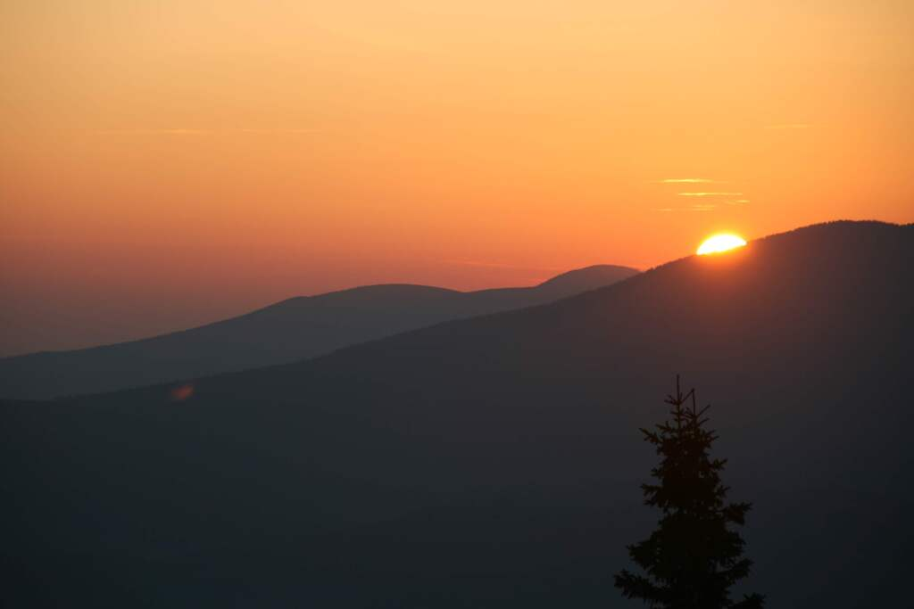
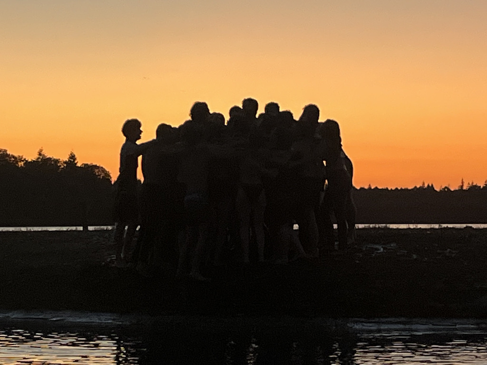
Pictures: Sunrise at IAYC 2019 (left), and sunset at IAYC 2025 (right)
Please make sure you have read this document, as well as the FAQ page, carefully. We are constantly contacted with questions which are clearly answered here.
We look forward to receiving your application and to seeing you in Mazarete! Clear skies from all of us,
Andrés, Dara, Dylan, Franzi, Joris, Laura, María, Nikki, Parker, Sarah and Zooey
Supporters of the IAYC
We are very grateful to the following organisations for their sponsorship towards the IAYC 2025. If you are interested in sponsoring us and would like your organisation to be listed here, please contact us at sponsorship@iayc.org.
- Wilhelm und Else Heraeus-Stiftung
- Julius-Maximilians-Universität Würzburg, Faculty of Physics and Astronomy
- Zaklada MIOC Alumni
- Faulkes Educational Trust